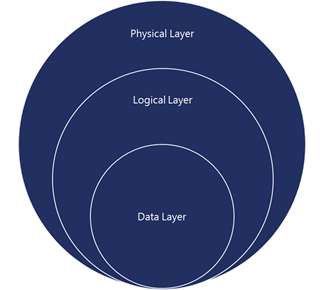

|
<< Click to Display Table of Contents >> Navigation: OnePractice > Security in OnePractice > Service Level Security |
Microsoft is recognised as an industry leader in cloud security. Using decades of experience building enterprise software and running online services, our team is constantly learning and continuously updating our services and applications to deliver a secure cloud productivity service that meets rigorous industry standards for compliance.
At the service level, we use a defence-in-depth strategy that protects your data through multiple layers of security (physical, logical and data):

Figure - Multiple layers of defense in depth
A defense-in-depth strategy ensures that security controls are present at various layers of the service and that, should any one area fail, there are compensating controls to maintain security at all times. The strategy also includes tactics to detect, prevent, and mitigate security breaches before they happen. This involves continuous improvements to service-level security features, including:
•Port scanning and remediation
•Perimeter vulnerability scanning
•Operating system security patching
•Network-level distributed denial-of-service (DDoS) detection and prevention
•Multi-factor authentication for service access
For more information on how Office 365 is protected against DDoS attacks, see Defending Office 365 against denial of service attacks, available for download from the Service Trust Portal (STP). Note, you must be enrolled in the STP to access this document. Enrollment is free and easy for all Office 365 tenants (including trial subscriptions). See Get started with the Service Trust Portal for Office 365 for business, Azure, and Dynamics CRM Online subscriptions for steps to enroll.
With regards to people and process, preventing breaches involves:
•Auditing all operator/administrator access and actions
•Zero standing permission for administrators in the service
•Just-In-Time access and elevation that is granted on an as-needed and only-at-the-time-of-need basis to troubleshoot the service
•Segregation of the employee email environment from the production access environment
•Mandatory background checks for high-privilege access. These checks are a highly scrutinized, manual-approval process.
Preventing breaches also involves automatically deleting unnecessary accounts when an employee leaves, changes groups, or does not use the account prior to its expiration. Wherever possible, human intervention is replaced by an automated, tool-based process, including routine functions such as deployment, debugging, diagnostic collection, and restarting services.
We continue to invest in systems automation that helps identify abnormal and suspicious behavior and respond quickly to mitigate security risk. We are also continuously evolving a highly effective system of automated patch deployment that generates and deploys solutions to problems identified by the monitoring systems—all without human intervention. This greatly enhances the security and agility of the service. We regularly conduct penetration tests to enable continuous improvement of incident response procedures. These internal tests help our security experts create a methodical, repeatable, and optimized stepwise response process and automation.